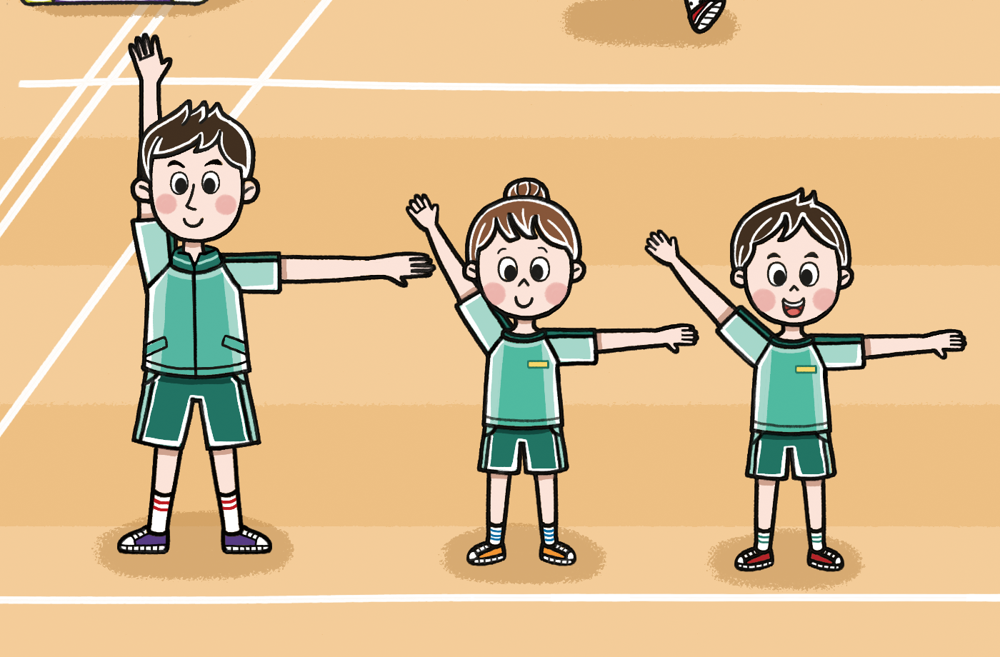
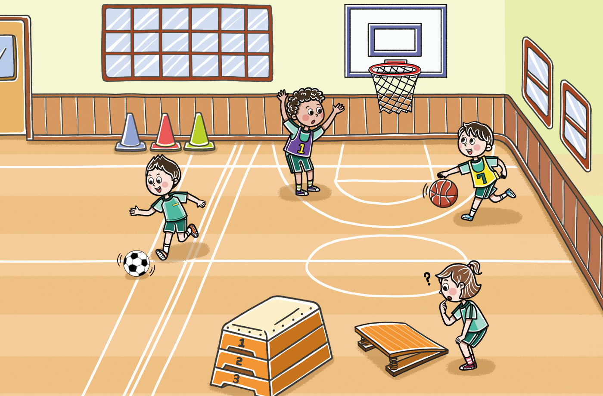

- 그림
- 물음 1
- 물음 2
- 물음 3
-
-
팔 벌리기 체조를 해 봐요!팔을 더 벌려야
겠어요. -
농구대에서는
직각이 보이네!다른 운동 기구에는
직각이 아닌
각들이 있어!
-
-
그림은 어떤 상황인가요?
여학생이 뜀틀과 발 구름판을 살펴보고 있습니다.선생님과 두 학생이 팔 벌리기 체조를 하고 있습니다. -
팔 벌리기 체조를
해 봐요!팔을 더 벌려야
겠어요.-
팔 벌리기 체조를 하는 사람 중에서 팔을 직각으로 벌리고 있는 사람을 찾아보세요.
선생님입니다. -
팔 벌리기 체조를 하는 사람 중에서 팔을 가장 많이 벌린 학생은 누구인지 찾아보세요.
남학생입니다.
-
-
농구대에서는
직각이 보이네!다른 운동 기구에는
직각이 아닌
각들이 있어!-
운동 기구에서 찾은 각을 직각과 직각이 아닌 각으로 분류해 보세요.
-
직각농구대에 있는 각
-
직각이 아닌 각뜀틀, 발 구름판
-
-
직각보다 더 벌어진 각과 직각보다 덜 벌어진 각을 찾아보세요.
-
직각보다 더 벌어진 각뜀틀에 있는 각
-
직각보다 덜 벌어진 각발 구름판에 있는 각
-
-